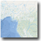
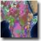
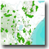
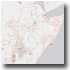

http://ags.servirlabs.net/ArcGIS/rest/services/EastAfrica
|  |
REST:http://ags.servirlabs.net/ArcGIS/rest/services/EastAfrica/Basemaps_Hydrology/MapServer
WMS: http://ags.servirlabs.net/ArcGIS/services/EastAfrica/Basemaps_Hydrology/MapServer/WMSServer
|
|  |
REST:http://ags.servirlabs.net/ArcGIS/rest/services/EastAfrica/Basemaps_Lithology/MapServer
WMS: http://ags.servirlabs.net/ArcGIS/services/EastAfrica/Basemaps_Lithology/MapServer/WMSServer
|
|  |
REST:http://ags.servirlabs.net/ArcGIS/rest/services/EastAfrica/Basemaps_ProtectedAreas/MapServer
WMS: http://ags.servirlabs.net/ArcGIS/services/EastAfrica/Basemaps_ProtectedAreas/MapServer/WMSServer
|
|  |
REST:http://ags.servirlabs.net/ArcGIS/rest/services/EastAfrica/Basemaps_Roads/MapServer
WMS: http://ags.servirlabs.net/ArcGIS/services/EastAfrica/Basemaps_Roads/MapServer/WMSServer
|